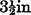

CHAPTER X.
THE TABLE AND DRESS.
THE TABLE: ITS HEIGHT—THE BODY—THE SHELF—THE LEGS —VANISHING AND CHANGING TRAPS—ON USELESS MECHANICAL ARRANGEMENTS—SIDE TABLES—HOW TO PASS ARTICLES DOWN TRAPS: VARIOUS METHODS—THE DRESS: POCKETS—THE VEST—HOW TO COMMENCE—INTRODUCTORY TRICKS.
OF very important assistance in Grand Conjuring are the specially prepared tables, of which one, two, or three will be used, according to the size of the room. These tables differ from ordinary ones, in the first place, by being considerably higher, their height being from 2ft. 10in. to 3ft. This is to render it unnecessary for the performer to stoop when taking anything from or placing anything upon the table, as the action would take away a great deal from an effective execution of many things. The next important difference (unknown, however, to the audience) is that the body of the table is a hollow box, of which that side which is unseen by the spectators is perfectly open, and is furthermore provided with a protruding shelf, technically called the servante. This shelf is one of the conjuror’s most invaluable assistants. It is always at hand to receive any article which it is desirable to get rid of, and is a patient holder of others which it may be required, at a particular moment, to produce from an invisible source, but which are too large to be concealed about the person. This shelf should be about 5in. or 6in. broad, and should have the ends either rounded or cut off obliquely. If this is not done, the shelf will be noticed by persons standing or seated at the extreme sides of the auditorium. The edge should be furnished with a small raised beading, to prevent articles from falling off. The depth of the body of the table should not exceed 6in., or it will excite suspicion and remark. If the shelf is fitted to the body of the table by means of hinges, it will be found a great convenience. It will never become mislaid or knocked about, and so be either missing or useless when most required; and it also enables one to use the body of the table as a means for conveying the bulk of the conjuring apparatus. The legs should be made to screw on and off, so as to increase the portability of the whole; but see that the worm of the screw is long and deep, or the table will be unsteady.
But, if the back of the table is mysterious, the top of it is still more so. For the speedy, easy, and completé vanishing of objects, particularly solids, it has been found convenient to fit the tops of tables with spring traps, which, yielding to certain pressure, resume their position when it is removed. Judiciously used, these traps are very useful, and the results attained by their use are most bewildering. In a table 36in. by 18in. (a very convenient size) there should be a round trap, . to 4in. in diameter, in each front corner, and an oblong trap, 9in. by 5in., in the centre. These traps are made of zinc; but I would recommend no one to attempt manufacturing them at home whilst they can be purchased so reasonably at conjuring trick repositories. I would certainly recommend having the table itself made, under personal supervision, by a carpenter, who will let the traps into the top of the table. The ordinary price for a 4in. trap is about 7s. 6d. There are many elaborate mechanical traps devised for changing articles, but I have never found them of much assistance in the hands of amateurs, so cannot conscientiously recommend them. There are also several methods for arranging piston rods, which work up and down by means of a string drawn by a confederate at the side or rear, or by electricity. But such assistance is so seldom required by the amateur conjuror, that I cannot recommend him to encumber his table with more than three traps. Everything beyond this he will find an unnecessary expense. The amateur will also find that his sphere will be continually changed, one day performing at this friend’s house and the next day at another’s. Hence he will be unable to produce the results which are attainable only by those who, like professional conjurors, have sole dominion over their stage and its surroundings at all times. As these chapters are written solely for the edification of amateurs, and not for the purpose of training up professionals, I shall not launch out into descriptions of things impossible to the great majority.
When the size of the room permits of it, the performer should have, besides his oblong table in the centre, one or two small round tables at the sides. These tables should be of the same height as the large one, but only about 18in. in diameter. They should be provided with one round trap and a small servante. The border should have a deep fringe. The tops of all three tables should be covered with a check pattern, in order to hide the lines of the traps. On a perfectly plain surface these might be noticed. Do not forget to provide the smaller traps with bags to receive the articles passed through. An egg would make an unseemly mess inside the table, whilst an orange or a lemon would descend with a thud sufficiently loud to reveal to the audience what had taken place. The centre trap, being used almost exclusively for vanishing live stock, need not be furnished with a bag.
Whilst on the subject of traps, I will describe the method for passing articles through them. Supposing an orange has to be made to disappear. After showing that it is a real orange and perfectly solid, &c., place it upon the trap, the spring of which must, of course, be strong enough to bear the weight without giving in the least. Turn up your sleeves very deliberately, and then place the hands around the orange as if about to take it up in them. Screened by the front hand, the rear one presses the trap down quickly, and the orange falls through, the hands being brought together as though holding it. Advance towards the audience a step or two and commence rubbing the hands together, gradually making the circumference of the hollow smaller and smaller until the orange appears to have been rubbed away. The action of vanishing the article must be assiduously practised, for the hands must not dwell perceptibly on the table, but appear to actually take up whatever they are supposed to. When pretending to rub it away, the eyes must be directed attentively to the hands as if interested in the experiment. When passing one article into another, as an egg into a lemon, place the lemon just in front of the trap, and, holding the egg in the rear hand, pass it down the trap under cover of the front hand, which will at the moment be just closing upon the lemon. The two hands then take the lemon, and, after rubbing it about a little, show it minus the egg, which you will say is inside. In the drawing-room, without the table, the same results would have to be arrived at by means of “vesting.” The present instance affords an excellent illustration of my remark that drawing-room conjuring is more difficult than grand conjuring.
Another method for vanishing articles through traps is to fix a cord to the under side of the trap, and, by means of a tiny pulley and staples, bring it to a hole in the end of the table, on the outside of which a knot is tied. The article can be then placed upon the trap and covered with a hat, &c., and made to disappear by pulling the cord. It is better to have the cord belonging to the right-hand trap coming out at the left-hand side, and vice-vers; otherwise the audience would be likely to notice the action of the hand pulling the cord, from its close proximity to the hat. By standing at that end of the table which is opposite to the hat, the performer can turn sideways, and point with his wand to the hat or tap it, when the action of pulling the string will be concealed by his body. In covering any article with a hat, be careful that the front or back part of it is towards the audience. The arch formed by the side brim of the hat of the present day enables one to see anything placed underneath it, and it must be admitted that it would be rather awkward if any of the audience saw the article suddenly drop into the body of the table. The uses of the large trap will be dilated upon at another time and place.
The uses of the servante being to hold things as occasion requires, they will make themselves manifest in due course.
Dress.—The conjuror’s dress will command a great deal of consideration, the disposition and capacity of the pockets being of considerable importance. I will first take the coat, which will, of course, be a dress one. The whole of the inside of each breast of this should be one huge pocket, the opening of which is perpendicular instead of horizontal, and about two inches from the edges, so as to just escape observation. This enables large objects to be concealed, and yet easily got at. The tail pockets are not used in performing, so can be either entirely absent or else made in the usual way. One tail, however, should have a large pocket about five inches deep at the bottom, and right across its width. This pocket should be made very loose so as to be always open to a slight extent, for it will often have articles dropped into it at all sorts of odd times. Some conjurors have copper wire in the edge to keep it open when required.
The vest is extremely important. It should be split right up the back and then re-joined by three bands of broad elastic. This is to enable one to put large articles in the breast without causing any unusual wrinkles or bulging. For vesting purposes, some have a strip of thin leather, about two inches broad, sewn round the bottom, inside, but I do not find this sufficiently safe. I usually have some fine elastic run in the hem by means of a bodkin. It should be tight enough to hold an egg (a heavy, slippery thing, and awkward when dropped) securely; but it must not pull the vest out of shape. The only extra pockets required in the trousers are one at each hip, covered by the tails of the coat. They should be about three inches’ long by one and a half in depth, and constructed so as to be always partly open. They are very handy for receiving such articles as coins, little balls, rings, pocketknives, &c., which it is desirable that the audience should not see. Little pockets, of a similar nature, are sometimes used behind the lappel of the coat ; but those in the trousers are far superior, as they are got at by the perfectly natural action of dropping the arm. The inside turn-up of the sleeve of the coat I have also seen similarly employed, but have not noticed any particular advantage to be derived therefrom.
Starting now with his prepared tables and mysterious suit, and armed with a fair amount of manipulative skill, the learner ought to be able to bid defiance. to the world, and to boldly attempt anything within his particular scope or province that he has seen anyone else do.
Before commencing, always say a few words, to the effect that you are there to conjure, and not to make speeches: so you will not detain the audience with a history of conjuring from the year 1, but proceed to show them what can be done in the present year. In family circles, more talking should be done than in public places, where an impressive style should be cultivated.
Introductory Tricks.—Besides, by means of the few words the performer addresses the company before commencing, it is quite in order that he should introduce himself to the spectators magically; that is to say, give them at once some little evidence of his skill, without any formality of explanation. A well-used trick for this purpose is that of causing a flower to appear instantaneously at the button-hole. Just as the performer is about to step forward, he perceives that he has forgotten his flower, but explains that the omission is very soon rectified, as he notices a bouquet in the hands of a lady, or some flowers in a coiffure, or about a costume. Asking permission, and taking it at once, the wand is waved in the direction of the visible flowers, and the button-hole then touched with it, when instantly a flower appears. The flower is an imitation one, and is attached to a piece of elastic, which passes through the button-hole, and inside through the one next below, so that it may be fastened to a vest button, or elsewhere. When the performer comes on, the flower is concealed under the left armpit; so that, when the button-hole is touched with the wand, all that is necessary is to raise the arm slightly, when the flower, being released, flies instantly into position.
Another common, but very effective, practice is to come on the stage with the gloves on. As they are taken off the hands, they melt away, apparently, for nothing more is ever seen of them. Elastic is again at the bottom of this, one end passing round the wrist of the glove, whilst the other is fastened round the biceps of the arm, or attached to the brace. The glove is removed, care being taken not to let it slip too soon, and, when held between the two palms, is allowed to go, when it flies, unperceived, up the sleeve. The performer must not dwell at all upon the fact that he is doing anything magical, but act as though his gloves were merely performing their usual evolutions on being taken off for the day.